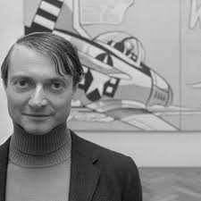
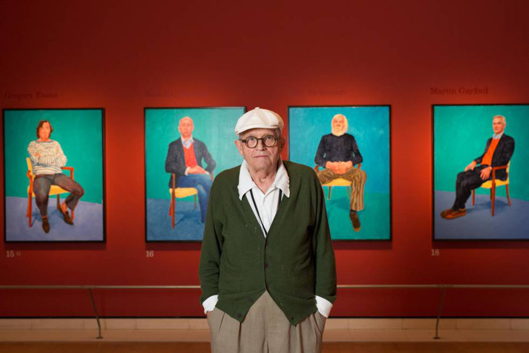
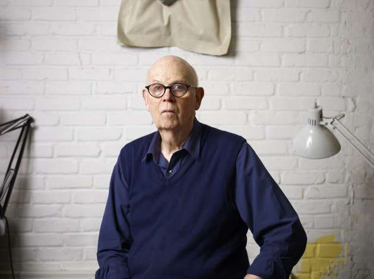
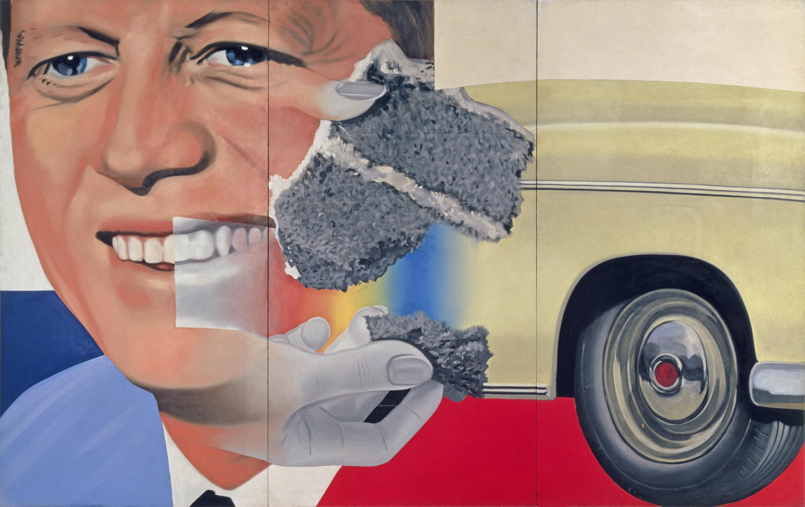
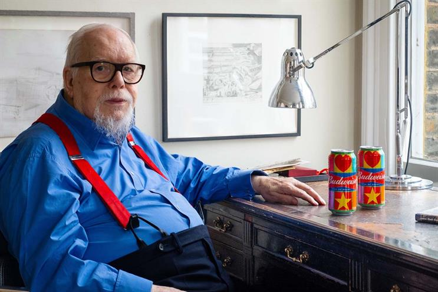
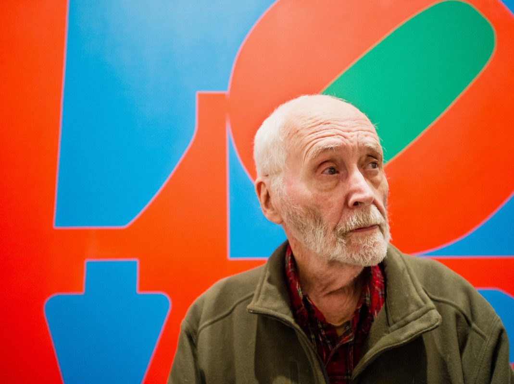
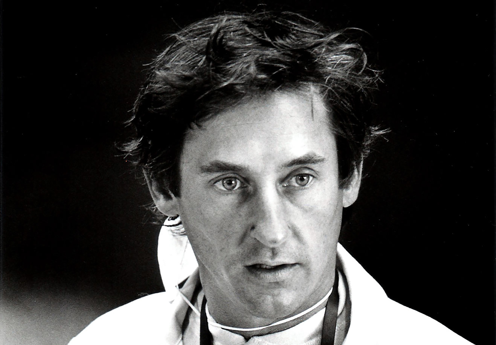

1928-1987
Maestro de la repetición y la cultura de masas.

1923-1997
Estilo cómic con puntos Ben-Day.

1937-
Colores vibrantes y escenas californianas.

1929-2022
Objetos cotidianos gigantes.

1933-2017
Publicidad convertida en arte.

1932-2023
Portada de Sgt. Pepper’s.

1928-2018
Famoso por “LOVE”.

1937-
Tipografía + paisaje.